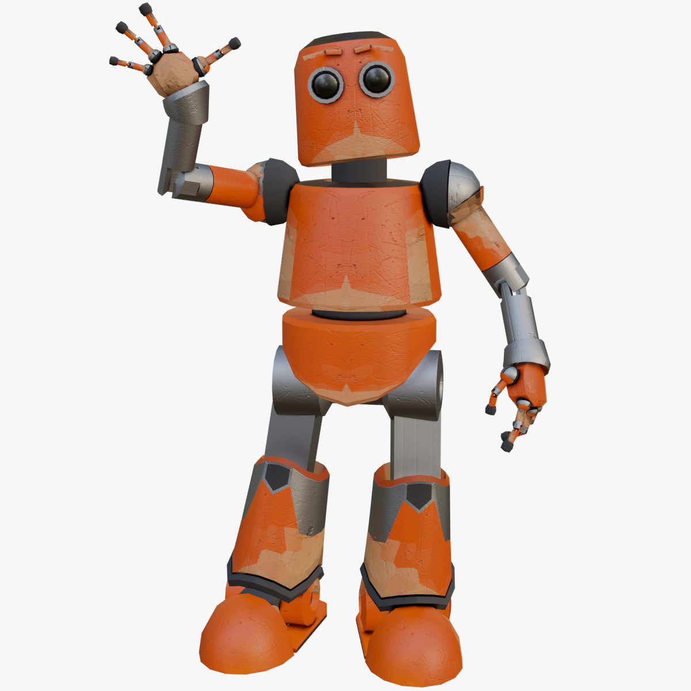
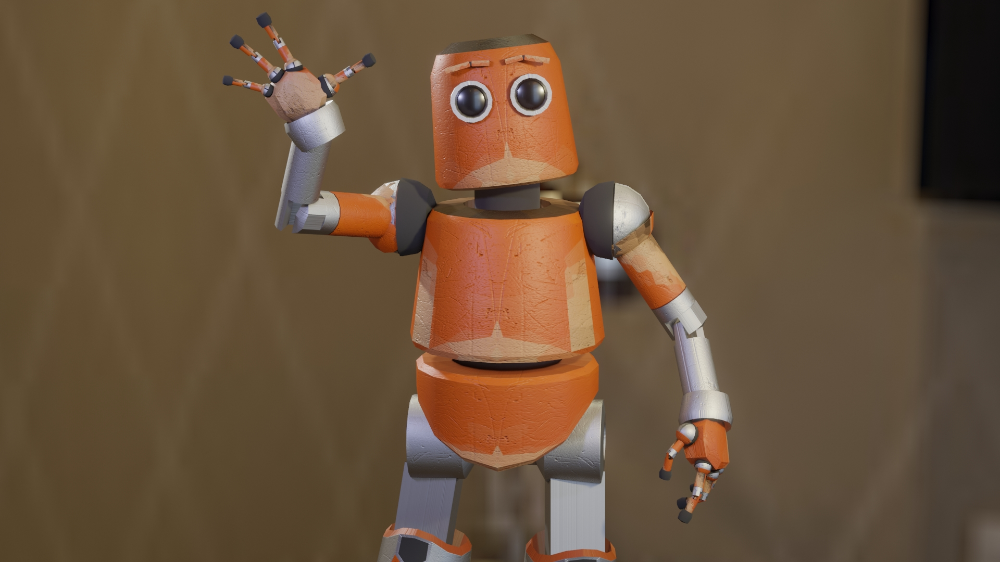
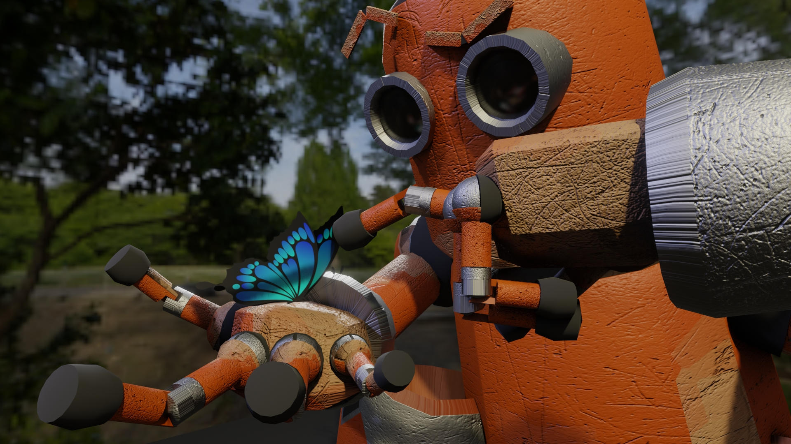
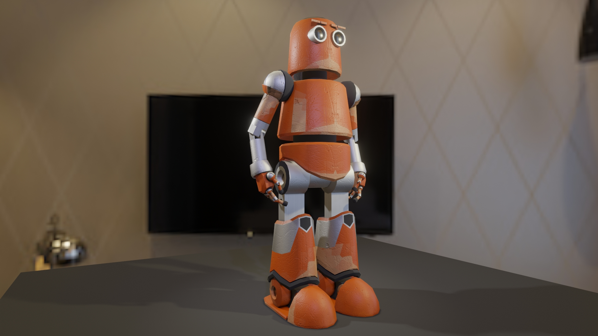
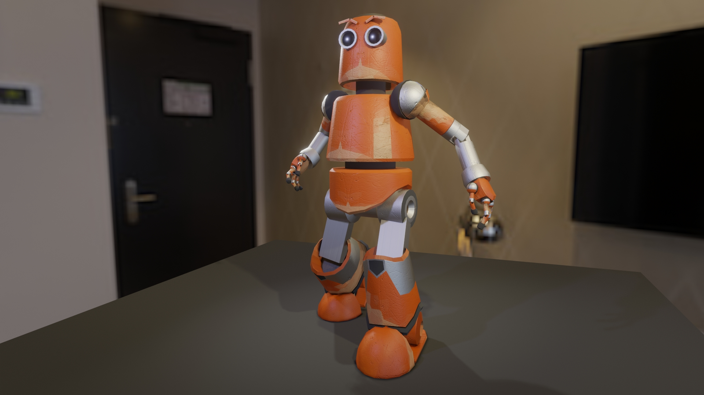
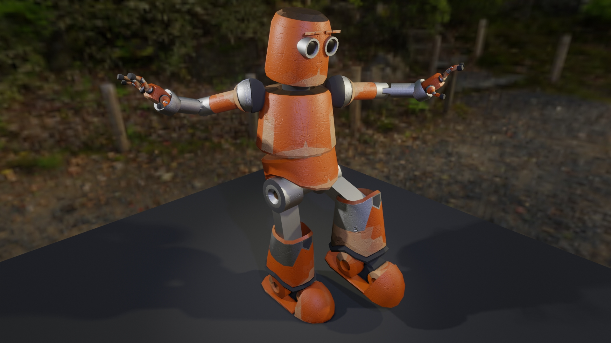
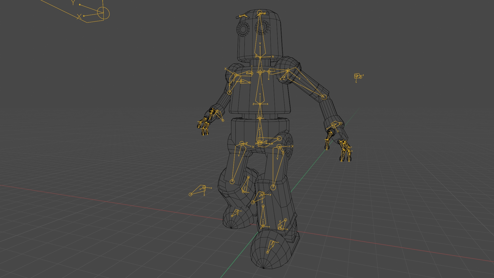
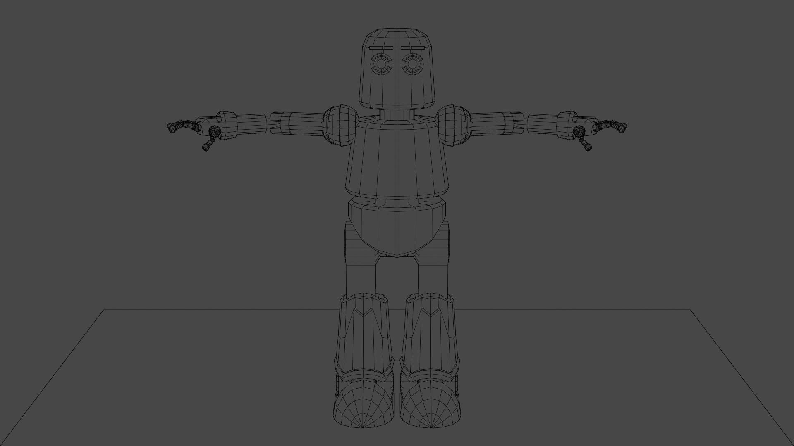

Canhead
Canhead is an original, game-ready 3D character taken from initial concept sketch to final engine export using Blender. Built with clean, deformation-ready topology and efficient UV unwrapping, the model features high-poly detail baked onto an optimized low-poly mesh with custom PBR materials. The asset is fully rigged, dynamically posed, and cleanly structured with zeroed transforms for seamless export into Unreal Engine or Unity.







